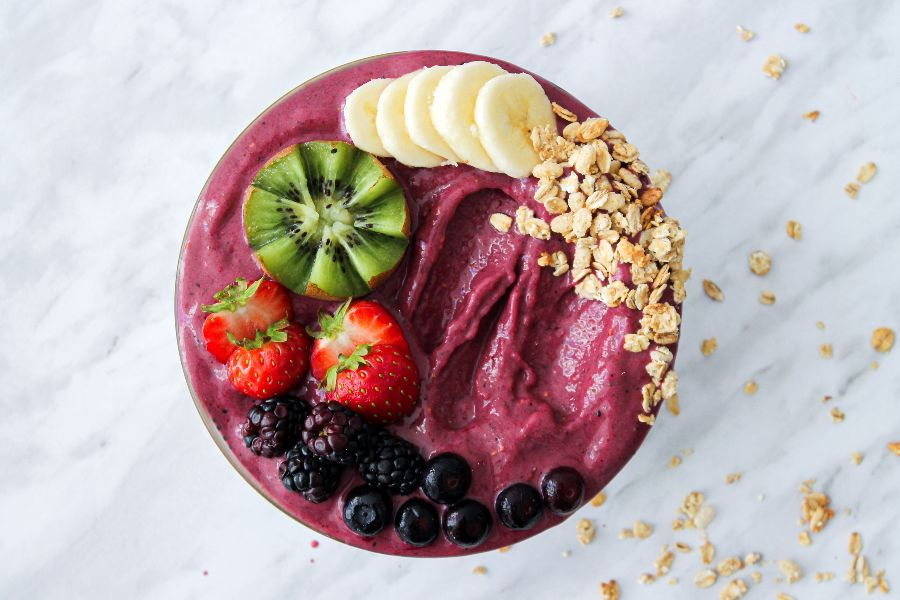
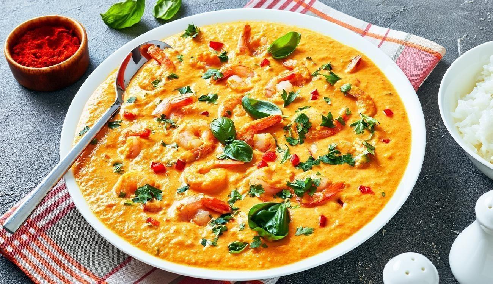

¿Vas a viajarr a Brasil y quieres saber donde encontrar este plato? ¡Haz click en la imagen de la receta que quieras disfrutar en tu viaje!
Acarajé
El acarajé es un plato típico de la cocina bahiana de Brasil, hecho con masa de frijoles frita en aceite de dendé y rellena de camarones, pimientos y cebolla. Suele ser un bocado callejero y se sirve con vatapá, caruru y salsa picante. Es una muestra deliciosa y distintiva de la tradición culinaria brasileña.
Evalue ese plato
Açaí

El açaí es una fruta cultivada en la selva amazónica y muy popular en Brasil y todo el mundo. Se consume en forma de batido o puré espeso en un bol con granola, frutas y otros complementos. Es nutritivo, rico en antioxidantes y se considera un superalimento saludable. El açaí es popular en Brasil por su capacidad para refrescar y energizar en los días calurosos y húmedos de la selva amazónica. Es un ejemplo de la rica variedad de alimentos y sabores de la cocina brasileña.
Evalue ese plato
Brigadeiro
El brigadeiro es un dulce típico brasileño hecho de leche condensada, cacao en polvo, mantequilla y azúcar. Es cocido a fuego lento hasta que se forma una masa densa y suave que se enrolla en pequeñas bolas y se cubre con virutas de chocolate o coco rallado. Es un símbolo de la cultura gastronómica brasileña y se ha convertido en un producto de exportación en todo el mundo. Es popular en fiestas y celebraciones y es apreciado tanto por niños como por adultos.
Evalue ese plato
Pan de Queso
El pan de queso es un pequeño pan redondo hecho con harina de yuca y queso, típico de la cocina brasileña. Se hornea hasta quedar dorado y crujiente por fuera, y esponjoso por dentro. Es comúnmente servido como aperitivo o acompañamiento, y también se consume como desayuno o merienda. Originario de las regiones de Minas Gerais y Goiás, el pan de queso es un elemento básico de la dieta local y se considera un símbolo de la identidad culinaria de la región. Su sabor único y suave lo han convertido en un favorito tanto de los locales como de los turistas que visitan el país.
Evalue ese plato
Coxinha
El coxinha es un aperitivo típico de Brasil que consiste en una masa de pollo desmenuzado y condimentos, que se moldea en forma de cono o lágrima, se cubre con pan rallado y se fríe en aceite caliente. Es un plato muy versátil y se puede encontrar en muchos lugares de Brasil, desde la comida callejera hasta los restaurantes más elegantes. El coxinha es una deliciosa opción para aquellos que buscan probar la comida típica de Brasil y es popular para compartir con amigos y familiares.
Evalue ese plato
Moqueca

El moqueca es un plato tradicional de Brasil, originario del estado de Bahía. Se trata de un guiso de pescado o marisco cocinado en una salsa espesa y aromática con ingredientes como aceite de palma, cebolla, tomate, ajo, pimiento y cilantro, y se le agrega leche de coco y pimienta malagueta. Se sirve con arroz blanco y farofa. Es muy popular en la costa brasileña.